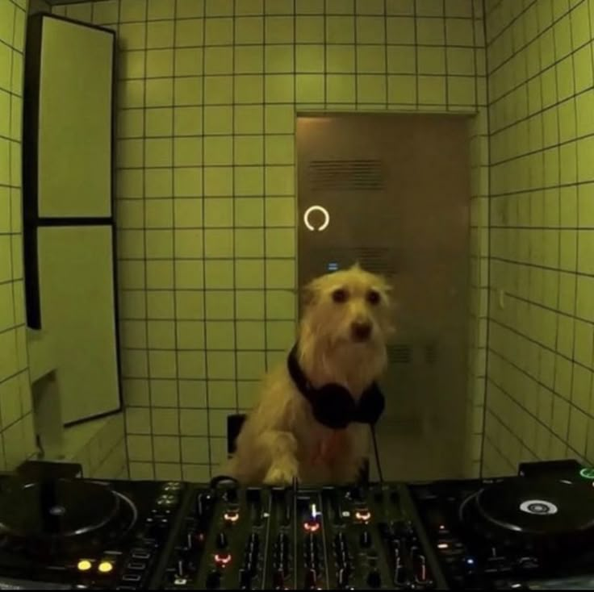

Griffin Sanders
| DSGN 372 | Digital Design 2 | Spring 2025 |
Hi, I’m Griffin! Thanks for stopping by.

I am a Design BFA student at Western Washington University with a passion for branding, typography, illustration, and motion design. I love using my ambitious creative vision in collaborative environments, and just making cool stuff.
I am proficient in the Adobe Creative Suite as well as Figma, and love any opportunity to expand my design skills and create work that leaves a lasting impression. Outside of design, you’ll catch me skiing at Mt. Baker, sketching in my sketchbook, traveling, or looking for cool birds. My dog Frank is a pug mix, so he is basically just a perfomance-enhanced pug that features longer legs as well as an elongated snout. Such a remarkable specimen can be acheved by breeding a pug with a poodle, chihuahua, bichon frise, and a Finnish laphund. The cool birds that I look for include fan favorites such as Ospreys, both Belted and Common Kingfishers, and Owls. Let’s connect!